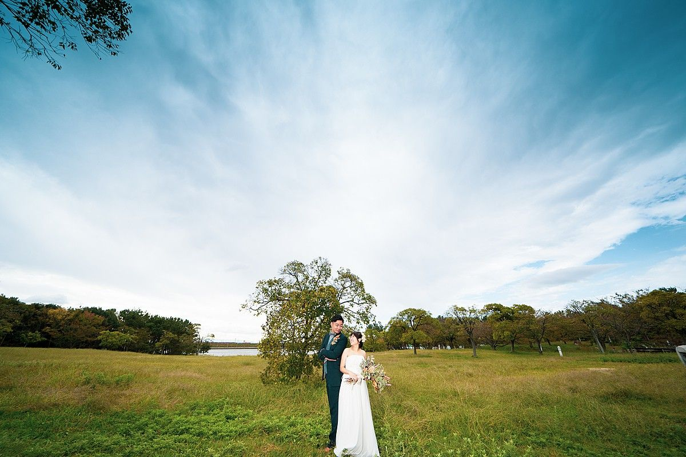
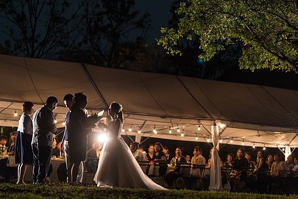
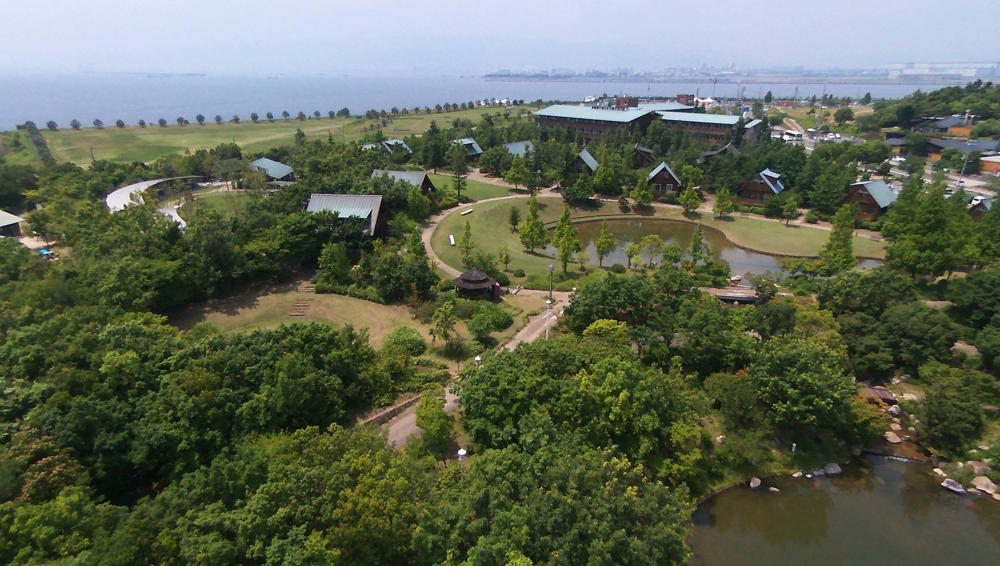

You went to Japan in 2024 and something shifted. It was your first trip out of the country together, your first time waking up next to each other every morning for two weeks. You walked through ten cities until you got blisters, asked a pharmacist for help in broken Japanese, and came home knowing you wanted to do life together. Japan was the place where a friendship became a future.
Now you want to go back. Not just the two of you, but with everyone who matters. Your families, your closest friends, the people who watched you grow from college friends at a boba shop into a couple building a life. You want them to walk through the streets you walked, eat the food you ate, feel what you felt. Like finding the best restaurant in the world and needing to bring your people back to experience it. Not all 150 people on the list, maybe. Just the ones who really count.
The ceremony is part of it, but it is not the whole thing. You will already be married by then, courtroom-official on Valentine's Day, with the anniversary you want. Japan is the celebration. It is the music and the dancing, the open bar and the full bellies, the late night out after the reception when nobody wants to go home. For Frances, it is the exhale: school finished, the test behind you, the weight finally off. The moment you stop planning for the future and start living in it. For Joseph, it is looking across the room and seeing her happy, surrounded by everyone you both love, in the country that started it all.
You land in Tokyo, explore with your people for three nights. Then the wedding party heads to Kyoto for the stag and hen. Everyone converges on Osaka for the main event. Then you two disappear to Okinawa.
Everyone flies into Tokyo. For you two, this is a homecoming. For most of your guests, it is their first time in Japan, and there is no better introduction. The energy, the food, the sheer scale of it. Three nights here gives everyone time to shake off jet lag, explore, and start falling in love with the country the way you did in 2024.
We will prepare a curated guest guide: a printed and digital booklet with our restaurant picks, neighbourhood walks, transit tips, and spots most tourists never find. Shinjuku, Shibuya, Harajuku, Asakusa. Your guests explore on their own schedule. No rigid itinerary. Just a really good set of recommendations from people who live here.
The wedding party takes the bullet train to Kyoto. The pace shifts completely. Where Tokyo was electric and Osaka will be a party, Kyoto is something else: ancient temples, stone paths, bamboo forests, the Kamogawa river at dusk. Two nights here for the bachelor and bachelorette, in a city that offers both peaceful cultural experiences and a surprisingly good nightlife scene.
This is dedicated time for Joseph with his groomsmen and Frances with her girls, before the wedding pulls everyone into the same orbit. Kyoto is the perfect backdrop: beautiful during the day, atmospheric at night.
Three cities in a week is an adventure. For the wedding party, the younger guests, and the travelers in your group, that pace is part of the fun. But we know that not everyone is built for three shinkansen rides and three hotel check-ins. Some of your older family members, or guests with mobility considerations, might prefer a simpler route. That is completely fine. Here is how we make it work.
Guests who want a more relaxed pace stay in Tokyo for an extra couple of days while the wedding party is in Kyoto. They continue exploring at their own speed: temples in Asakusa, shopping in Ginza, day trips to Kamakura or Nikko. Then they take a single bullet train directly from Tokyo to Osaka on March 25, arriving in time for the wedding. One move instead of two. Simple.
Guests who want to get settled in Osaka can head straight there from Tokyo on March 23 while the wedding party goes to Kyoto. They get two extra days to explore Osaka on their own: Dotonbori, Osaka Castle, Shinsekai, the best street food in Japan. By the time the rest of the group arrives on March 25, they are already the local experts.
If three cities feels like too much for the overall group, we can keep everyone in Tokyo for the full first stretch and run the stag and hen there instead of Kyoto. Tokyo has no shortage of options: Golden Gai bar crawls, Shibuya nightlife, go-karts, onsen day trips to Hakone, cooking classes in Tsukiji. The group then moves together as one from Tokyo to Osaka. Two cities instead of three. The wedding day stays exactly the same.
We will help you communicate all of these options to your guests clearly, with transport instructions and timing for each route. Nobody gets left behind. Nobody feels pressured to keep a pace that does not suit them.
Everyone converges on Osaka. The wedding party arrives from Kyoto (15 minutes on the shinkansen). Other guests arrive from Tokyo or from exploring on their own. Check in, breathe, take it easy.
This is a rest day by design. Tomorrow is the big day. Joseph and Frances can separately visit the venue for a walk-through. We will be there to run through the full timeline: ceremony flow, reception setup, music, logistics. Hair and makeup trial for Frances. Final touches on everything.
The evening is free. Explore Osaka, grab dinner with family, or take an early night. Tomorrow, everything comes together.
This is it. The day you have been building toward since that first trip in 2024. You are already married on paper. Today is about standing in front of your people and celebrating what that means, in a country that changed your lives.
A note on the Friday: this is deliberate. In Japan, wedding venues charge 20 to 30 percent more on Saturdays, and peak cherry blossom season amplifies that further. A Friday ceremony saves you thousands of dollars and gives you access to exclusive venue buyouts that are impossible to get on a weekend. Your guests are already on vacation. The day of the week does not change the experience. It just changes the price.
Preparation starts early. Hair and makeup for Frances and the bridal party. Joseph and the groomsmen get ready separately. A first look, just the two of you, before anyone else sees you. Private vows if you want them. Then the ceremony.
You want something nature-adjacent, non-religious, and not overly elaborate. Western-style but in a setting that could only be Japan. Here are three directions we have researched in Osaka.



A sprawling waterfront estate on the Osaka bay, with 13,000 square metres of private grounds, a lake, forest paths, and open fields. The ceremony, the reception, the dancing, the after-party — all in one place. No shuttles. No moving between locations. No venue curfew on music. The property is exclusively yours for the day.
Zero vendor restrictions: you bring your own photographer, florist, DJ, and catering without surcharges or approved vendor lists. On-site accommodation from $50 per night means guests can stay the night. This is the strongest fit for your budget, your vibe, and your guest count.
After the ceremony: drinks. A cocktail hour while we turn the space around for dinner, or a natural transition if the venue allows ceremony and reception in one flow. Then dinner, speeches, toasts.
Full bellies, open bar, dancing, music. Not a disco ball. Not a banquet hall garden. Something in the middle: authentic, warm, and celebratory.
This matters to both of you. Frances, you said music would make the night. Joseph, you talked about wanting a DJ or the flexibility to play your own selections. Bilingual wedding DJs are rare in Osaka. They exist, but many are Tokyo-based, which means travel fees. A professional bilingual DJ for 4 to 5 hours runs $650 – $1,700. The alternative is a high-quality sound system rental ($100 – $500) where you control the playlist and a friend MCs. Either way, the music is yours. The Bayside venue has no sound restrictions. The Castle Rooftop is also music-friendly. Most traditional Japanese venues are not.
The reception ends. Nobody wants to go home. Osaka is one of the best nightlife cities in Japan, and the bars stay open late. We can organize a private karaoke room for the whole crew ($17 – $40 per person for 3 hours with drinks), a guided bar crawl through Namba ($33 – $87 per person), or a late-night venue hire with nomihodai ($23 – $53 per person). Karaoke is the crowd favourite and the most affordable. For 40 people, expect $700 – $1,600. Or we just point you in the right direction and everyone pays their own way.
Saturday is a slow start. Late morning. You gather whoever is awake for a casual group brunch or lunch. Stories from the night before, inside jokes, the photos nobody planned. Some guests may need to head to the airport. Others can explore Osaka on their own for an extra day.
Sunday morning, you and Frances fly from Kansai Airport to Okinawa. New islands, new pace, just the two of you. The hustle and bustle is behind you. This is the quiet part. We do not plan honeymoons as part of our core service, but we are happy to share our recommendations for Okinawa. We know it well.
We will provide recommendations for hair, makeup, and photography from our vetted roster of professionals who specialize in working with non-Japanese features and work within a range of budgets. You decide whether to book through us or source your own.
On language, logistics, and punctuality: Juri is Japanese and manages all vendor relationships, negotiations, and on-the-ground coordination in Japanese. This is not remote planning from another country. We live in Tokyo. We are in the same timezone as your vendors, your venues, and your wedding. When Joseph mentioned the late vendor at his brother's wedding in the Philippines and how it threw off the whole schedule, that stuck with us. Japanese vendor culture runs on precision, and we reinforce that by managing every timeline detail directly, in the language your vendors speak. Nothing starts late. Nothing gets missed.
You told us your biggest concern is the numbers. That research says one thing and then the real cost is double. We are not going to do that to you. Below is our planning fee and researched cost ranges for each category, based on real Osaka venue data and vendor pricing at your guest count. These are not guesses. They are ranges we can defend.
These are the costs that come out of your wedding budget. This is the ceremony, the reception, and the core vendors that make the day happen.
| Ceremony venue (Friday pricing) | $1,000 – $2,500 |
| Reception catering + nomihodai, 100 guests (buffet) | $6,000 – $12,000 |
| DJ / music | $650 – $1,700 |
| Florals & decor | $1,400 – $3,700 |
| Photography (8–10 hours, bilingual) | $1,500 – $4,500 |
| Hair & makeup (bride + 5 bridesmaids) | $700 – $2,000 |
| Planning fee | $8,500 |
| Wedding Day Total (100 guests) | $19,750 – $34,900 |
These are the group experiences across the week. In destination weddings, it is standard for these costs to be shared among attendees or self-funded by participants. We have listed them here so you can see the full picture and decide what you want to cover versus what guests contribute to.
| Welcome dinner, Tokyo (yakiniku, 80 guests) | $2,700 – $5,100 |
| Family brunch, Tokyo (~35 guests) | $700 – $2,000 |
| Beauty day, Tokyo (~17 guests) | $1,000 – $3,000 |
| Stag party, Kyoto (per person, ~12 guys) | $140 – $430 |
| Hen party, Kyoto (per person, ~12 women) | $115 – $300 |
| After-party, Osaka (~40 people) | $700 – $2,000 |
| Trip Events Total | $8,160 – $20,860 |
The biggest variable in your budget is guest count. Here is how the per-guest costs (reception catering + nomihodai only) scale across your range.
Your stated wedding budget is $19,000 to $21,000. Based on our research, that budget covers the wedding day at a venue like the Bayside Garden Estate: ceremony, buffet reception with nomihodai for 100 guests, a DJ, florals, photography, and hair and makeup. It is tight, but it works. Especially on a Friday, where venue discounts of 20 to 30 percent are standard.
Where it does not stretch is the full week of events. The Tokyo welcome dinner, family brunch, beauty day, stag and hen parties, and after-party add $8,000 to $21,000 on top. This is normal for destination weddings. In most cases, these costs are shared: the welcome dinner is split among attendees ($33 – $65 per person), stag and hen parties are self-funded by participants, the beauty day is paid individually, and the after-party is pay-your-own at karaoke. If you structure it this way, your $19,000 to $21,000 covers the wedding itself.
Alternatively, if you want to fund some of the group events yourselves, a total budget of $28,000 to $33,000 covers the wedding plus the Tokyo dinner and after-party at mid-range quality, with stag and hen remaining attendee-funded.
If 150 guests attend rather than 100, the catering cost alone jumps by $3,000 to $6,000. At that count, the $19,000 to $21,000 budget would need to increase, or the per-person catering cost would need to come down significantly.
We will never surprise you with costs. As Joseph said: clear expectations. That is how we work.
Review this proposal together. Tell us what resonates, what does not, and what we got wrong. We iterate until the plan feels right.
Once you are ready, a deposit locks in your dates and we begin securing venues and vendors. Spring 2027 is popular. Early commitment gives you the best options.
We handle the research, the calls, the negotiations, the coordination. You stay in the loop at every stage, with full budget transparency along the way.